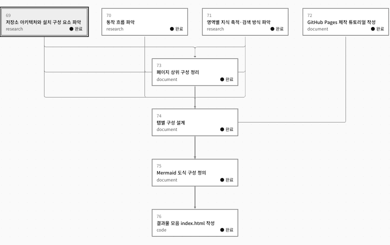
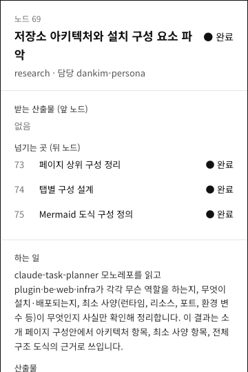

claude-task-planner
큰 작업을 계획으로 나눠 진행하고, 과거의 성공 사례와 조언을 계획과 실행에 반영하는 Claude Code 플러그인입니다.
실행 화면 예시는 아래를, 단계별 동작은 자세히 보기를 참고하세요.
실행 화면 예시
이 소개 페이지의 구성을 정한 실제 계획(계획 14)의 기록입니다. 단계를 누르면 해당 장으로 넘어갑니다.
사용자자연스럽게 말을 할거니까 그걸 보고 정리해주면 좋을듯
Claude좋습니다. 하려는 일을 편하게 말씀해 주세요. 순서나 형식은 신경 쓰지 않으셔도 됩니다. …
사용자오케이 지금 우리가 해야 하는 것은 뭐냐면, 이 문서를 위한 설명 페이지를 만드는 것임. 각 페이지에 들어갈 구체적인 내용을 만드는 것은 목적이 아니고, 어떤 구성이 있어야 할지. 어떻게 표시할지. 가 있으면 됨. …
Claude초안에 대부분이 정해져 있어서 남은 결정만 묻겠습니다.
Q1 결과물 위치: 결과물을 어디에 저장할까요? (a) 지금 폴더 아래 plan_repo/intro-page/ (b) 모노레포 안 docs/intro-page/ …
사용자plan_repo/intro-page/ index.html …
Claude위 정리로 명령서를 만들까요? 예 / 더 이야기
명령
claude-task-planner 저장소를 소개하는 GitHub Pages 페이지의 구성과 표시 방식을 정합니다. 각 페이지의 실제 내용을 쓰는 일은 이번 목적이 아닙니다.
맥락
- 유저 인터뷰: 핵심 장점은 영역마다 지식을 모으고, 모은 지식을 검색으로 관리한다는 점입니다.
- 유저 인터뷰: 대상 독자는 두 부류입니다. …
할 일
- GitHub Pages로 소개 페이지를 만들고 About 영역에 연결하는 방법을 튜토리얼 수준으로 정리합니다.
- 소개 페이지에 꼭 필요한 내용을 정합니다. 탭을 어떻게 나눌지, 탭마다 대략 어떻게 구성할지를 정합니다. …
중요한 것
- 각 영역에는 꼭 필요한 내용만 적고 미사여구를 쓰지 않습니다.
- 보고서처럼 명확하고 간결하게 씁니다. …
산출물 · 범위 밖 · 종류
튜토리얼 문서, 소개 페이지 구성안 문서, 모아 보는 index.html · 실제 본문 작성과 배포는 하지 않음 · 조사

검색된 지식 4개 중 관계있다고 고른 2개#6 기획 문서 작성 · #5 문서 작성 계획 (고르지 않음: #7 서비스 설계 문서 작성, #3 API 서버 개발)
지식 #6 (계획 11을 검토하며 사용자가 한 말에서 저장)기획 문서는 상위 기획과 하위 기획으로 나누어 차례로 작성한다. …
지식 #5 (계획 3을 검토하며 사용자가 한 말에서 저장)문서를 만드는 계획에서는 검토를 마지막 노드로 따로 두지 않는다. 각 작성 작업 안에서 스스로 점검하고 끝낸다.
나누기 판단이 구성안은 최종 결과물의 핵심이라 중요도가 높아 나눕니다. 검색 결과(기획 문서 작성)에 따라 상위 기획(독자별 목적·핵심 가치·탭 구분)과 하위 기획(탭별 구성·항목 표시)으로 나누고, … 검색 결과(문서 작성 계획)에 따라 별도의 검토 작업도 두지 않습니다.
결과노드 73 "페이지 상위 구성 정리", 노드 74 "탭별 구성 설계"로 나뉘었고, 마지막 검토 노드는 없습니다.
사용자가 계획 11을 검토하며 한 말이거는 하는데, 여기도 한번 이 다음에 이게 만약에 rdms 테이블 모델링이 필요한 경우에, 이걸 rdms 테이블을 모델링 단계가 추가되면, 저 다음으로 말이지 했으면 좋겠어.
확정할 때 뽑혀 저장된 지식 #7 · 서비스 설계 문서 작성서비스 설계 문서를 작성하는 계획에서 RDBMS 테이블 모델링이 필요하면, 도메인 문서 작성 단계 바로 다음에 테이블 모델링 단계를 넣는다.
도메인 문서 작성 → 테이블 모델링 → API 문서 작성 → …
작업 지시 (.plan/14/nodes/73/prompt.md) 중 ## 참고 정보 - 문서 작성 원칙: 각 영역에는 꼭 필요한 내용만 적고 미사여구를 쓰지 않습니다. 보고서처럼 명확하고 간결하게 씁니다. 탭 목적 문장과 핵심 가치 문장에 적용합니다. 노드 8개 실행: 모두 완료 (노드 72는 한 번 실패해 작업 지시를 고쳐 다시 실행) 결과: .plan/14/nodes/<노드>/result.md
CLAUDE.md, plan 모드와 비교
| 기존 방식 | claude-task-planner | |
|---|---|---|
| 지시와 규칙 | CLAUDE.md에 직접 적어 두면 세션마다 통째로 읽힙니다 | 계획을 검토하며 한 말에서 지식을 뽑아 저장합니다. 작업마다 검색해 관계있는 것만 넣고, 누가 어느 계획에서 한 말인지 근거가 남습니다 |
| 계획 | plan 모드의 계획은 그 세션 안에서 쓰고 끝납니다 | 계획이 노드 그래프로 저장되고, 노드마다 작업 지시를 써서 실행하며, 노드 상태가 남습니다 |
조사, 설계, 작성이나 구현처럼 단계와 산출물이 여럿인 일에 맞습니다. 한 세션에서 끝나는 작은 수정에는 과합니다.
명령
/task-planner:run make_plan <할 일>- 인터뷰로 명령서를 정리하고 계획을 만듭니다. 만든 뒤에는 계획 표를 보며 노드를 나누거나 합치고, 넣거나 빼고, 순서를 바꿔 달라고 말로 고칩니다.
/task-planner:plan-go <계획 id>·/task-planner:plan-cancel <계획 id>- 계획을 승인하거나 불허합니다. 어느 쪽이든 검토 대화에서 지식 후보를 뽑아 저장할지 묻습니다. 불허한 계획은 끝나고 다시 열 수 없습니다.
/task-planner:plan-run <계획 id>- 승인한 계획을 실행합니다. 노드마다 작업 지시를 쓰고 노드를 순서대로 실행합니다.
서버
지식을 다시 쓰려면 서버가 필요합니다. 처음부터 서버와 함께 쓰는 것을 권합니다.
| 플러그인만 | 서버 연결 | |
|---|---|---|
| 지식 검색 | 검색어와 관계없이 저장된 지식을 저장 순서대로 돌려줍니다. 사실상 지식 재사용이 되지 않습니다 | 한국어 형태소 분석으로 낱말을 나눠 찾습니다. 벡터 검색을 더할 수 있습니다 |
| 계획과 지식 저장 | 플러그인 버전 폴더 안의 파일. 플러그인을 새 버전으로 바꾸면 따라오지 않을 수 있습니다 | 서버의 데이터베이스 |
| 웹 화면 | 없음 | 계획과 지식, 담당 역할을 보고 고칩니다 |
플러그인만 쓰다가 서버로 옮기는 기능은 없습니다. 작업 지시와 작업 결과는 어느 쪽이든 작업 폴더에만 남습니다.
필요한 것
- Claude Code
- uv와 Python 3.12 이상: 플러그인 명령을 실행합니다
- Docker, Docker Compose: 서버를 띄울 때
알아 둘 것
- 노드 실행은 묻지 않고 파일을 고치고 명령을 실행합니다.작업 폴더에서 Claude(opus)가 파일 읽기·쓰기·고치기, Bash, 웹 검색 도구를 씁니다. 노드 하나는 30분까지, 동시에 3개까지 돕니다. 실행 전에 노드 수와 대략의 시간·비용을 먼저 보여 줍니다.
- 지식은 담당 역할(페르소나) 단위로 모이고 찾습니다."백엔드 개발" 역할의 지식은 그 역할이 맡은 계획에서만 찾습니다. 담당 역할은 웹 화면의 페르소나에서 만들고 고칩니다. 지금은 계획을 만들 때 페르소나 목록의 첫 번째가 담당이 됩니다. 서버 하나를 여럿이 쓰면 같은 담당 역할의 지식을 함께 씁니다.
- 사용자가 답하는 곳은 정해져 있습니다.인터뷰 질문, 계획을 고칠 때(원할 때만), 확정할 때 지식 후보마다 한 번과 본문 확인, 실행 중 확인 노드와 실패한 노드입니다.
- 지식은 검토 대화에서만 모입니다.승인과 불허 모두 계획을 보여 준 뒤의 대화에서 뽑고, 실행 결과에서는 뽑지 않습니다. 불허한 계획은 끝나고 다시 열 수 없습니다.
1. 플러그인 설치
Claude Code에서 입력합니다.
/plugin marketplace add dkGithup2022/claude-task-planner /plugin install task-planner@claude-task-planner
설치한 뒤 Claude Code를 껐다 켭니다. /reload-plugins로는 세션 시작 훅이 돌지 않아, 처음 계획을 만들 때 실패합니다.
2. 서버 띄우기
플러그인을 설치하면 저장소 전체가 ~/.claude/plugins/marketplaces/claude-task-planner/에 받아지므로, 그 폴더에서 실행합니다.
cd ~/.claude/plugins/marketplaces/claude-task-planner cp infra/.env.example infra/.env # POSTGRES_PASSWORD 를 바꿉니다 docker compose -f infra/docker-compose.yml up -d --build
| 항목 | 값 |
|---|---|
| 컨테이너 | 서버(FastAPI), 웹 화면(Next.js), 데이터베이스(PostgreSQL + pgvector) |
| 주소 | 서버 http://localhost:8000/api, 웹 화면 http://localhost:3000. 포트는 infra/.env의 BE_PORT, WEB_PORT로 바꿉니다. 데이터베이스는 밖에 열지 않습니다 |
| 데이터 | 볼륨 pgdata, models. docker compose -f infra/docker-compose.yml down으로 꺼도 남습니다 |
| 벡터 검색 | 기본은 꺼져 있습니다. 켜면 모델 약 0.22GB를 내려받고 서버 메모리가 약 0.5GB 늘어납니다 |
| 첫 빌드 | 약 10분 |
서버에는 인증이 없습니다. 외부에 열 때는 따로 막아야 합니다.
3. 담당 역할 만들기
새 서버에는 담당 역할이 없습니다. 웹 화면의 http://localhost:3000/personas에서 하나 이상 만듭니다. 없으면 계획을 만들 때 멈춥니다.
4. 서버 연결
작업 폴더의 .claude/settings.local.json에 넣습니다. 넣지 않으면 서버 대신 플러그인 폴더의 파일을 씁니다.
{
"env": {
"TASK_PLANNER_API": "server",
"TASK_PLANNER_API_URL": "http://localhost:8000/api"
}
}
5. 처음 써 보기
/task-planner:run make_plan <할 일>을 입력하고 인터뷰에 답합니다. 정리된 명령서를 확인하면 계획 표가 나옵니다.- 고칠 곳이 있으면 말로 요청합니다.
/task-planner:plan-go <계획 id>로 승인합니다. 지식 후보마다 병합, 새 지식으로 저장, 넣지 않기 가운데 고릅니다./task-planner:plan-run <계획 id>로 실행합니다. 확인 노드 차례이거나 노드가 막히면 묻고, 끝나면 노드별 결과 표를 보여 줍니다.
계획 id를 빼고 부르면 이 작업 폴더의 계획 목록을 보여 줍니다.
구성
모든 구성 요소가 사용자 컴퓨터에서 돕니다. 플러그인은 판단이 필요한 일을 별도 프로세스의 Claude(claude -p)에게 맡깁니다. 서버와 웹 화면과 데이터베이스는 로컬 Docker에서 돕니다. 점선은 서버를 연결했을 때만 쓰는 연결입니다.
flowchart LR
U(["사용자"])
subgraph CC["Claude Code"]
P["플러그인
task-planner"]
end
C["Claude
별도 프로세스"]
L[("작업 폴더")]
T[/"대화 기록"/]
subgraph DK["로컬 Docker"]
W["웹 화면 :3000"] --> B["서버 :8000/api"] --> D[("데이터베이스")]
end
U -->|명령| P
U -->|브라우저| W
P -->|판단 · 실행| C
T --> P
P -->|지시 · 결과| L
P -.->|계획 · 지식| B
| 구성 요소 | 하는 일 |
|---|---|
| 플러그인 | 명령을 받아 단계를 차례로 진행합니다. 계획을 고칠 때와 확정할 때 쓰는 대화는 Claude Code가 남기는 세션 기록 파일에서 읽습니다 |
| Claude (별도 프로세스) | 명령서 쓰기, 노드 나누기, 지식 후보 뽑기, 작업 지시 쓰기, 노드 실행을 맡습니다. 노드 실행만 작업 폴더에서 파일 쓰기와 Bash 같은 도구를 씁니다 |
| 서버 | 계획, 노드 상태, 담당 역할, 지식을 저장하고 지식을 검색합니다 |
| 웹 화면 | 계획과 지식, 담당 역할을 브라우저에서 보고 고칩니다 |
어디에 무엇이 남는가
| 위치 | 남는 것 |
|---|---|
| 서버 (서버 없이 쓰면 플러그인 폴더) | 계획(제목, 명령서, 노드, 간선, 상태), 지식(작업 이름, 본문, 근거), 담당 역할 |
.plan/<계획 id>/ | 명령서, 노드마다 작업 지시(prompt.md)와 작업 결과(result.md) |
.task_planner/ | 명령의 실행 상태와 단계별 기록 |
.claude/settings.local.json | 서버 연결 설정, Claude Code 상태 줄 설정 |
웹 화면
계획을 그래프로 보고, 노드마다 하는 일과 산출물, 진행 상태를 확인합니다. 지식 목록에서 지식을 찾아보고 고치거나 지울 수 있습니다.

노드를 누르면 오른쪽에 상세가 열립니다. 앞 노드에서 받는 산출물, 결과를 넘기는 뒤 노드, 하는 일과 산출물 형태가 보입니다. 웹 화면 전체 캡처
그림에서 흰 상자는 사용자가 하는 일, 회색 상자는 플러그인이 하는 일입니다.
전체 흐름
지식은 계획을 확정할 때 모이고, 다음 계획을 나눌 때와 실행할 때 쓰입니다. 불허한 계획은 실행하지 않고 끝나지만, 검토 대화에서 지식은 모읍니다.
flowchart LR
A["계획 만들기"] --> B["대화로 고치기"] --> C["확정"]
C -->|승인| D["실행"]
C -->|불허| X["끝"]
C -->|모으기| K[("지식")]
K -->|지시에 넣음| D
K -->|나눌 때 참고| A
classDef stop fill:#ffffff,stroke:#cfcfcf,color:#8a8a8a,stroke-dasharray:4 3
class X stop
계획 만들기
명령서 전체를 작업 하나로 보고 한 층씩 내려가며 나눕니다. 층마다 작업 하나하나에 대해(동시에 4개) 지식을 찾고, 더 나눌지 정합니다. 나눈 작업은 다음 층에서 다시 판단하고, 나눌 것이 없거나 상한에 닿으면 멈춥니다.
flowchart TB U1["할 일을 말하고 인터뷰에 답함"] --> P1["명령서 쓰기
명령서 전체를 작업 하나로 시작"] subgraph L["층마다 반복 · 작업마다"] direction LR P3["지식 검색
나누는 방식 10개"] --> P4["관계있는 것
5개까지 고르기"] --> P5["더 나눌지 판단
바로 아래 단계까지"] end P1 --> L K[("지식")] -.-> L L -->|"나눌 것이 없거나 노드 40개 · 깊이 5"| P6["맨 아래 작업마다
하는 일 · 산출물 · 종류 쓰기"] P6 --> P7["노드 사이 순서 정하기"] --> U2["계획 표를 받음"] classDef user fill:#ffffff,stroke:#111111,stroke-width:1.5px classDef plug fill:#f3f3f3,stroke:#cfcfcf class U1,U2 user class P1,P3,P4,P5,P6,P7 plug
더 나눌지 판단하는 기준 (프롬프트 원문)
아래 세 가지를 고려하여 적절한 깊이까지 나눕니다.
1. 별도의 작업 목표를 가질 수 있는가: 나눈 작업이 각자 따로 목표와 산출물을 가질 수 있어야 합니다. 하나의 산출물을 만드는 과정의 단계일 뿐이라면 나누지 않습니다.
2. 중요도: 최종 결과물에 중요한 부분일수록 더 세분화합니다. 덜 중요한 부분은 한 작업으로 둡니다.
3. 전문성과 복잡도: 전문성이 많이 필요하거나 복잡한 작업은 여러 단계로 나눕니다.
단, 검색 결과에 특정 작업을 더 세세하게, 혹은 덜 세세하게 작성하라는 자료나 근거가 있다면 그 지시를 참고하여 나눕니다.
그 분야 전문가들이 공통으로 나누는 방식으로 나눕니다. 이번 일에만 쓰이는 지엽적인 분해는 하지 않습니다.
한 번에 바로 아래 단계까지만 나눕니다. 나눈 작업을 더 나눌지는 그 작업을 판단할 때 정합니다.
사용자의 확인이 꼭 필요한 자리에는 확인 노드를 둡니다. 프롬프트는 이를 "앞 작업의 결과를 사용자가 확인하고 다음으로 넘어가도 된다고 허가하는 자리"로 정하고, 얕은 단계에서만 제한적으로 두게 합니다. 노드의 종류(조사, 문서, 코드, 확인)는 맨 아래 작업마다 정의서를 쓸 때 정합니다.
검색어는 작업 이름과 그 작업이 맡는 범위입니다. 나누기 판단은 근거로 쓴 지식을 밝힙니다(용도 탭 실행 화면 예시의 4장).
대화로 고치기
flowchart LR U1["고칠 곳을 말함"] --> P1["고치기 동작으로 옮김"] --> P2["앞뒤 순서를 다시 정함"] --> U2["새 계획 표를 받음"] U2 -->|더 고칠 때| U1 classDef user fill:#ffffff,stroke:#111111,stroke-width:1.5px classDef plug fill:#f3f3f3,stroke:#cfcfcf class U1,U2 user class P1,P2 plug
노드를 나누거나 합치고, 넣거나 빼고, 이름·지시 내용·순서를 바꿔 달라고 말합니다. 넣을 자리가 분명하지 않으면 Claude가 묻고, 순서가 돌고 도는 등 새 문제가 생기면 적용하지 않고 이유를 알립니다. 이 대화가 확정할 때 지식을 뽑는 재료가 됩니다.
확정과 지식 모으기
flowchart LR U0["승인 또는 불허"] --> P2["검토 대화에서
후보 뽑기
16개까지"] --> R subgraph R["후보마다"] direction TB P3["비슷한 지식 찾기
같은 역할 10개"] --> U3["병합 · 새로 저장
· 넣지 않기"] --> P4["본문 초안 쓰기"] --> U4["본문 확인과 수정"] end R -->|저장| K[("지식")] R --> P5["승인 · 불허
기록"] classDef user fill:#ffffff,stroke:#111111,stroke-width:1.5px classDef plug fill:#f3f3f3,stroke:#cfcfcf class U0,U3,U4 user class P2,P3,P4,P5 plug
무엇을 지식으로 뽑는가 (프롬프트 원문)
계획을 사용자에게 보여 준 뒤부터 /plan-go 또는 /plan-cancel 직전까지의 대화를 읽고, 사용자가 준 피드백에서 다음 계획에도 쓸 지식을 뽑습니다. 뽑은 것은 후보입니다. 저장은 사용자가 확인한 뒤에 합니다.
| 종류 | 뽑는 말 | 쓰이는 곳 |
|---|---|---|
| 계획 (plan) | 일을 어떻게 나누고, 어떤 순서로, 어디까지 할지에 대한 말 | 계획을 나눌 때 |
| 작업 (domain) | 그 일을 어떻게 해야 하는지의 방법, 규칙, 사실에 대한 말 | 작업 지시를 쓸 때 |
지엽적이거나 이번 계획에서만 쓸 수 있는 정보는 뽑지 않습니다. 다른 계획에서 같은 일을 할 때도 쓸 수 있는 것만 뽑습니다.
이번 계획에만 있는 이름(제품 이름, 서비스 이름)이 들어 있으면, 그 이름을 빼고 일반화해서 씁니다.
사용자 말에 있는 것만 씁니다. 사용자가 말하지 않은 이유나 방법을 지어내지 않습니다.
저장한 지식에는 근거로 사용자가 한 말과 계획 번호가 남습니다. 병합을 고르면 기존 지식의 본문 뒤에 덧붙이고 근거도 더합니다. 지식의 작업 이름은 나중에 검색할 때 쓰이므로, 특정 제품 이름 대신 "기획 문서 작성"처럼 일의 이름으로 짓습니다.
실행
flowchart TB U0["실행을 요청함"] --> P1["노드 수와 대략의 시간 · 비용을 알림"] --> P2["노드마다 작업 지시 쓰기
담당 역할의 작업 지식 · 태도 지식 5개씩 넣음"] --> P3["앞 노드가 끝난 노드를 실행
동시에 3개, 노드 하나 30분까지"] P3 -->|"확인 노드 차례"| U1["결과를 보고 허가 또는 허가하지 않음"] P3 -->|"실패"| U2["다시 · 지시 고쳐 다시 · 건너뛰기 · 멈추기"] U1 --> P3 U2 --> P3 P3 -->|"모두 끝남"| U3["노드별 결과 표를 받음"] K[("지식")] -.-> P2 classDef user fill:#ffffff,stroke:#111111,stroke-width:1.5px classDef plug fill:#f3f3f3,stroke:#cfcfcf class U0,U1,U2,U3 user class P1,P2,P3 plug
| 단계 | 하는 일 | 남는 것 |
|---|---|---|
| 작업 지시 쓰기 | 노드 이름과 산출물 설명으로 지식을 찾아 넣고 Claude가 작업 지시를 씁니다. 사람이 고친 작업 지시는 덮어쓰지 않습니다. 만들지 못한 노드가 있으면 다시 만들지 묻습니다 | prompt.md |
| 노드 실행 | 작업 폴더에서 Claude가 파일 읽기·쓰기·고치기, Bash, 웹 검색 도구를 묻지 않고 씁니다. 30분마다 진행 상황을 알립니다 | result.md, 서버의 노드 상태 |
| 실패 | 건너뛰면 그 노드에만 기대는 뒤 노드도 건너뜁니다. 다시 실행하면 이전 결과를 보관합니다 | 서버의 노드 상태 |
| 끝 | 모든 노드가 완료되거나 건너뛰어지면 계획을 "끝남"으로 바꿉니다 | 서버의 계획 상태 |